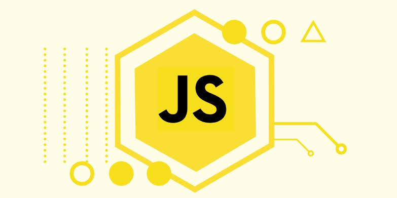
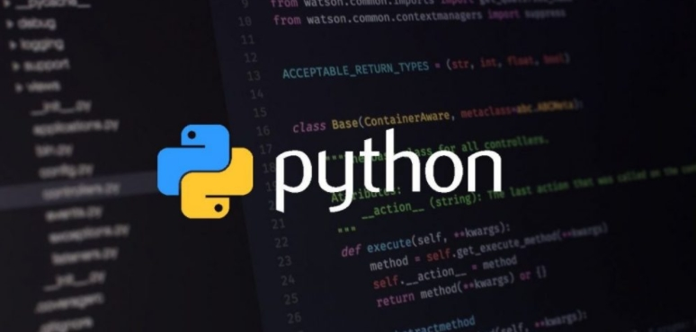
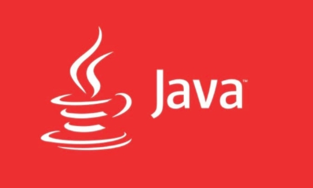
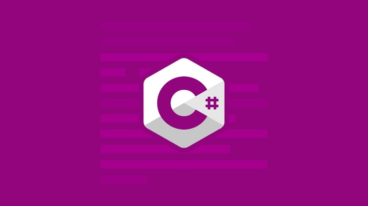
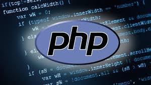
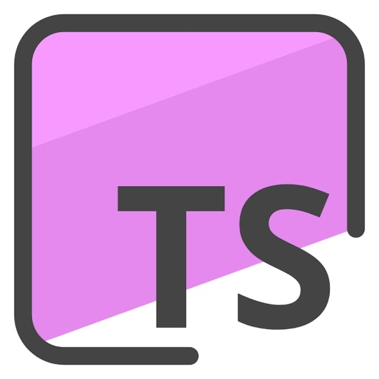
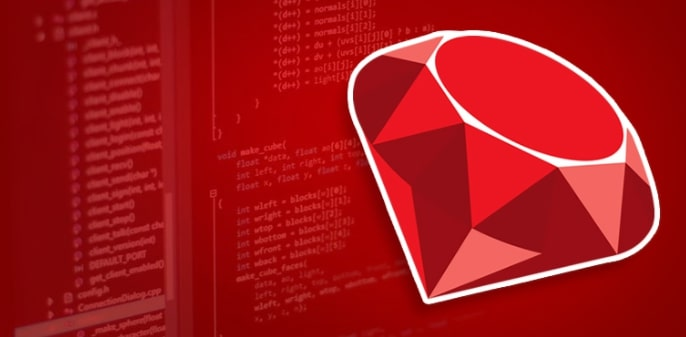

Apesar de existir uma grande variedade de linguagens de programação, algumas podem ser mais adequadas para certos negócios ou empresas. É preciso cuidado, pois você pode se tornar um mestre em uma linguagem específica, mas, se ela não for muito requisitada no mercado de trabalho, isso significa que poderá ter dificuldades em arranjar um emprego na área.
Sendo assim, se você está buscando alternativas para conseguir se adequar às necessidades do mercado de trabalho, confira neste artigo 10 das linguagens de programação mais utilizadas atualmente. Dessa maneira, você poderá escolher algumas para aprender e conseguir garantir uma boa posição - e um bom salário!

JavaScript é uma linguagem de programação interpretada. Foi originalmente implementada como parte dos navegadores web para que scripts pudessem ser executados do lado do cliente e interagissem com o usuário sem a necessidade deste script passar pelo servidor, controlando o navegador, realizando comunicação assíncrona e alterando o conteúdo do documento exibido.
O JavaScript ainda é amplamente utilizado em aplicações web e tem ganhado espaço no desktop/mobile, sendo bastante usado para criar interatividade. Apesar de ser uma linguagem mais antiga em comparação à maioria das que serão listadas aqui, o JavaScript é bastante requisitado e parte desse sucesso se deve a sua simplicidade.

Considerada a linguagem de mais fácil aprendizado, a Python continua a ser uma das mais populares no mercado, mesmo que tenha sido lançada há quase 30 anos atrás (em 1989). É um dos códigos de mais fácil leitura e é bastante utilizado para desenvolvimento web e machine learning.

A linguagem de programação mais solicitada de longe é o Java. No topo da maioria dos índices especializados na medição da popularidade, o Java se caracteriza por ser portável, ou seja, é possível compilar um programa em Java de maneira fácil para todo tipo de aparelho. Vale lembrar também que o Java é a linguagem mais usada para a criação de aplicativos Android.
Outro ponto positivo do Java é a sua escalabilidade, ou seja, a capacidade de adaptar seu programa à medida que ele cresce em número de utilizações, além de sua retrocompatibilidade, já que um código feito em uma versão antiga continua a ser reconhecida pelas versões atuais.

Outra variação da linguagem C que é bastante popular no mercado. Porém, anda caindo em desuso em relação a anos anteriores. Assim como o C++, é mais complexo de se aprender que outras linguagens como Python e JavaScript. Por outro lado, ainda é uma linguagem bastante requisitada na área de desenvolvimento de games, se tornando essencial para quem planeja entrar nesse mercado.

Usado majoritariamente em aplicações web, a linguagem PHP é útil para incluir funções a uma página que o HTML não é capaz de suportar. A linguagem também é utilizada para integração entre informações de sua página e banco de dados MySQL, por exemplo. Sites como o Yahoo e a versão web do Facebook são mantidas em PHP.
Um dos principais motivos pelo qual o C é uma das linguagens mais populares também se dá pela própria popularidade de suas variantes. O C++ é uma versão mais atual do C - embora também já tenha certa idade - e é bastante utilizado no desenvolvimento de softwares mais pesados, como sistemas integrados (CRM), aplicações que promovem interação entre cliente e servidor ou jogos para computador, entre outros.

Criada pela Microsoft, TypeScript está provando ser uma escolha comum entre os desenvolvedores ASP.NET. Não se trata, na verdade, de uma linguagem completamente nova, mas sim um superset (ou superconjunto) do JavaScript.
Com TypeScript dispomos de recursos que melhor suportam o uso da Programação Orientada a Objetos, que tem como base quatro princípios fundamentais: encapsulamento, herança, abstração e polimorfismo, os quais veremos de forma mais detalhada a seguir. A POO sempre foi um problema ao ser aplicada em JavaScript, devido a sua sintaxe não permitir escrever classes, por exemplo, de forma tão clara, além da fraca tipagem de dados. O TypeScript oferece então uma forma de corrigir ou contornar esses problemas, adicionando funcionalidades que quando compiladas resultarão em código JavaScript novamente. Porém, agora o desenvolvedor lidará diretamente com uma sintaxe simplificada, mais clara e amplamente suportada por editores de código modernos.
Talvez a mais conhecida entre as linguagens de programação - principalmente pelas suas variantes C++ e C# -, a linguagem C também é uma das mais antigas já lançadas. Sua principal vantagem está também na facilidade de portar um programa para outro tipo de dispositivo. Vale notar também que a linguagem C, desde cedo, foi adotada por gigantes como Microsoft e Linux, entre outros.
Apesar de antigo, aprender C traz boas vantagens ao desenvolvedor, já que funciona em quase todo tipo de sistema e não exige muito das máquinas. Por conta dessa pouca exigência de performance, a linguagem C é bastante usada para criar softwares para aparelhos pequenos e dispositivos que contam com a Internet das Coisas (IoT).

Se está a procurar trabalho em uma startup, o Ruby é a linguagem perfeita para conseguir uma vaga na área. Usada na construção de serviços mundialmente reconhecidos como o Airbnb e o Twitter, a linguagem Ruby se caracteriza pela sintaxe de fácil leitura, permitindo que um desenvolvedor escreva menos código para que suas aplicações funcionem.
Através do framework web Ruby on Rails, a linguagem permite o lançamento de aplicações web em uma velocidade bem maior que em outras linguagens. O lado negativo do Ruby é que ele é uma linguagem difícil de escalar, ou seja, complicada de manter a medida que sua aplicação cresce em número de usuários, já que ele utiliza bastante processamento para compensar erros no código.
Go é uma linguagem de programação criada pela Google e lançada em código livre em novembro de 2009. É uma linguagem compilada e focada em produtividade e programação concorrente, baseada em trabalhos feitos no sistema operacional chamado Inferno. O projeto inicial da linguagem foi feito em setembro de 2007 por Robert Griesemer, Rob Pike e Ken Thompson. Atualmente, há implementações para Windows, Linux, Mac OS X e FreeBSD.
Apesar de a linguagem já ter passado dos 10 anos, só de uns tempos para cá tem se escutado falar mais sobre ela, principalmente com seu uso sendo adotado por softwares comumente e amplamente utilizados como Docker e Kubernetes, desenvolvidos na linguagem.
A estrutura da linguagem Go lembra muito o C, mas sua curva de aprendizado é mais simples. Go foi uma linguagem criada para usufruir ao máximo de computadores com recursos multi-core, facilitando assim na compilação de código de forma eficiente e naturalmente cooperativa com as abstrações dos sistemas operacionais atuais.